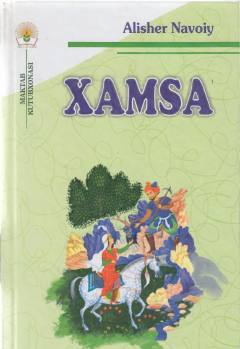

XAlisher Navoiyning «Xamsa» dostonlari nasriy bayoni.
Ushbu kitob buyuk mutafakkir Alisher Navoiyning «Xamsa» asariga kiruvchi besh dostonning nasriy bayonini o'z ichiga oladi. Asar dostonlarning mazmunini sodda va tushunarli tilda yoritib berib, kitobxonlarga Navoiy ijodini anglashda ko'maklashadi.